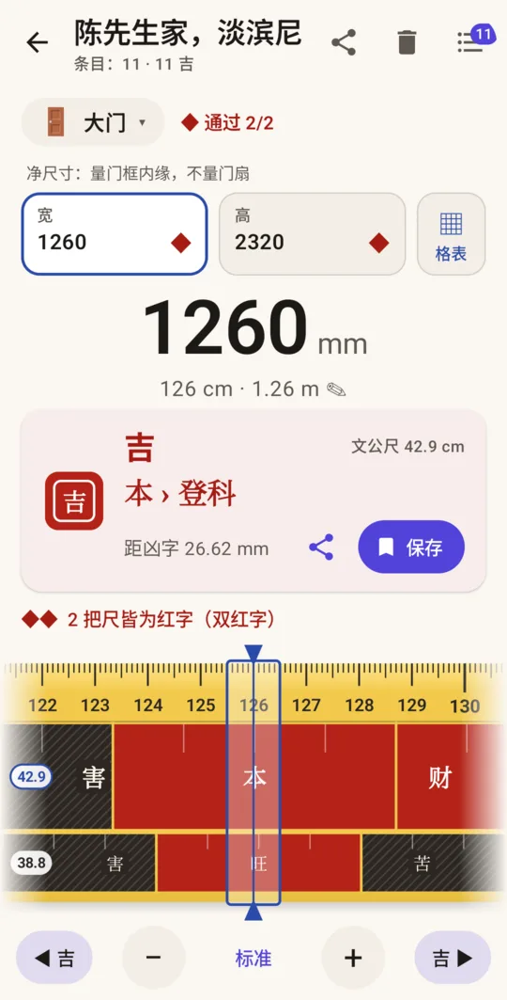
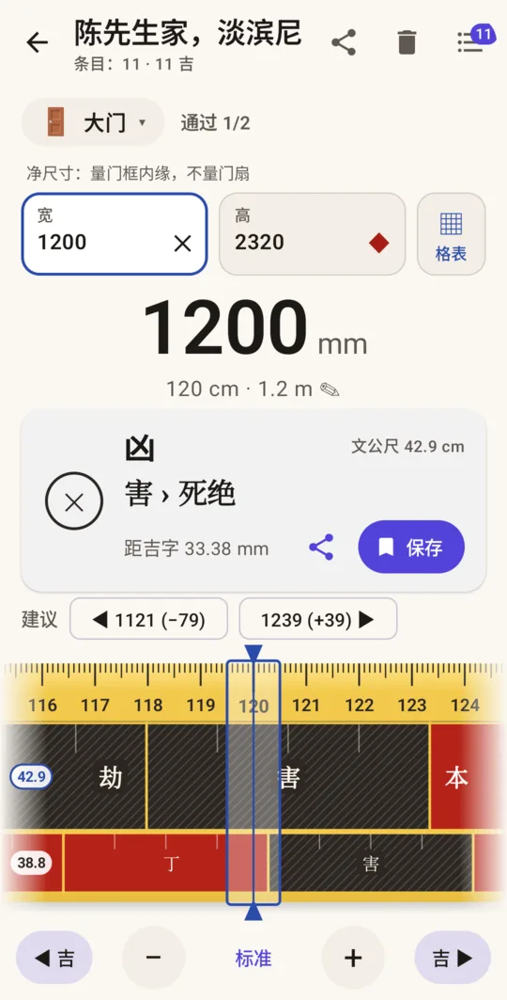
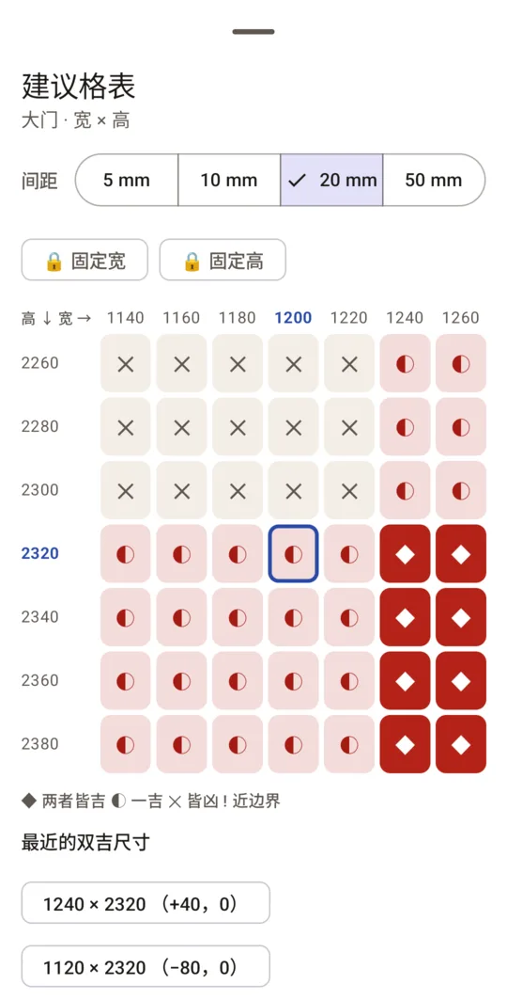
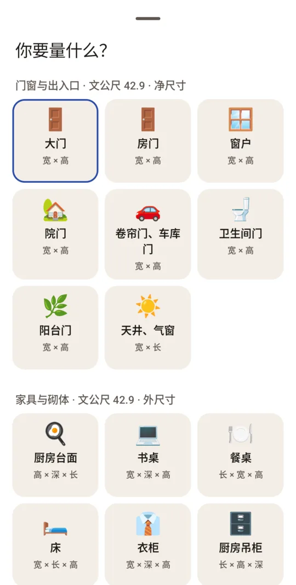
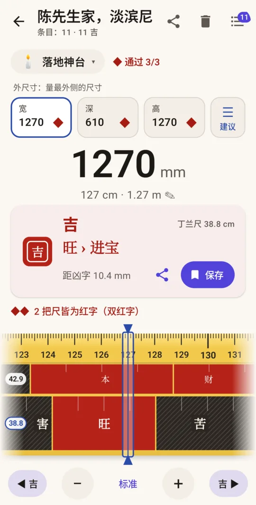
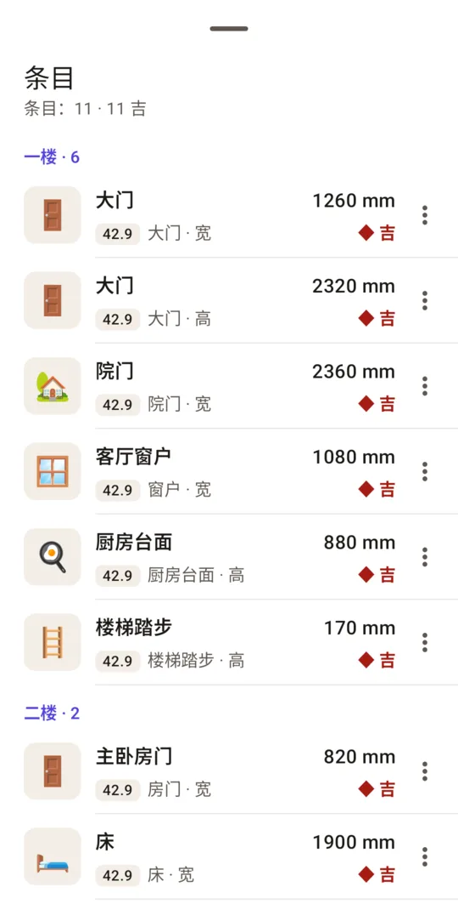

墨尺 – 鲁班尺・文公尺
Android · iPhone · 免费 · 无需账号
为拿着卷尺的人设计的鲁班尺：选择项目，输入尺寸（厘米、毫米或英寸），立即知道落在文公尺或丁兰尺的哪一格、是红字还是黑字、距边界还有几毫米，以及最近的合适尺寸。






功能
一把讲清每个数字的量尺，而不只是涂上红黑两色。
每种项目用对的尺
门窗与出入口按文公尺 42.9 厘米量门框内缘的净尺寸。家具与砌体按文公尺量外尺寸。神台、牌位与阴宅用丁兰尺 38.8 厘米。你选项目，应用选尺并提醒量法。
红字黑字，附带余量
吉、吉但近边界、或凶，并显示大格与小格名称（财、义、官、本…），以及距格位边界还有几毫米。每个结果都有文字和符号，不只靠颜色。
最近的合适尺寸
遇到黑字尺寸，应用给出上下最近的红字尺寸。“吉 ▶”一键跳到下一个合适尺寸，并按你选的 1、5 或 10 毫米取整。
宽 × 高格表
门的宽和高都要合适。格表列出你输入尺寸周围的所有组合，间距 5 至 50 毫米，并给出两者皆吉的最近组合。
整栋房子的项目
按区域（如一楼、佛堂）保存每个尺寸，可附照片，再通过 WhatsApp 或任何聊天应用把整份清单发给木工或设计师。
按你采用的版本选尺
各家资料不一：文公尺 42.9、42.85 或 46.08 厘米，丁兰尺 38.8、39 或 38.79 厘米。在设置中选择，已保存的结果会重新计算。近边界的容差和取整间距也可调整。
无需账号，数据留在手机
项目和照片只保存在你的手机上。离线也能用，可量到 50 米。
两把尺，各司其职
华人常用的鲁班尺卷尺把文公尺印在上排、丁兰尺印在下排（上阳下阴）。每把尺分为吉（红字）与凶（黑字）的格位，按周期重复。项目决定用哪把尺、怎么量。
| 尺 | 周期 | 用途 | 量法 | 吉（红） | 凶（黑） |
|---|---|---|---|---|---|
| 文公尺 42.9 厘米（阳宅） | 429 毫米，8 格 | 大门、房门、窗户、卷帘门、天井；厨房台面、床、衣柜、书桌、楼梯踏步、砌体 | 门窗量净尺寸，家具量外尺寸 | 财、义、官、本 | 病、离、劫、害 |
| 丁兰尺 38.8 厘米（阴宅） | 388 毫米，10 格 | 神台、神龛、神柜、财神龛、祖先牌位、坟墓 | 外尺寸 | 丁、旺、义、官、兴、财 | 害、苦、死、失 |
算法：尺寸减去整数个周期，看余数落在哪一格。例如宽 1260 毫米的大门用文公尺：1260 − 2 × 429 = 402 毫米，落在本字（375.4–429 毫米），为吉。最近的黑字边界在 375.4 毫米，相距 26.6 毫米。
净尺寸指门框内缘之间的空间，不含门扇与门框。外尺寸指物品最外侧的尺寸。越南语界面另有越南习惯的 52.2 厘米通水尺（量门窗净尺寸）；华人地区的卷尺没有这把尺，所以中文界面不显示。
常见问题
什么是鲁班尺？
鲁班尺是选定房屋、家具和神台尺寸时使用的传统尺，以木匠祖师鲁班命名。尺面分为吉（红字）与凶（黑字）的格位，按周期重复。华人常用的鲁班尺卷尺印有文公尺 42.9 厘米（上排）和丁兰尺 38.8 厘米（下排）；越南另有专量门窗的 52.2 厘米通水尺，墨尺只在越南语界面显示它。
门用哪把尺？
文公尺。量门框内缘的净尺寸，不含门扇，宽和高都要检查，墨尺在两者皆吉时显示“通过 2/2”，宽 × 高格表列出附近所有组合。越南语界面则按越南习惯用 52.2 厘米通水尺量门。
神台用哪把尺？
墨尺按华人惯例：家具、柜子、台面用文公尺量外尺寸；神台、神龛、祖先牌位与坟墓用丁兰尺 38.8 厘米量外尺寸，宽、深、高一次检查。也有人神台用文公尺，在项目列表的“自由”组里可以直接指定用哪把尺对照。
为什么各网站和应用的结果不同？
因为各家资料不一：文公尺有 42.9、42.85（1.4142 台尺）与古制 46.08 厘米，丁兰尺有 38.8、39 与 38.79（1.28 台尺）厘米，也有人家具一律用丁兰尺。不少常见尺寸又刚好接近格位边界，差几毫米结论就变。墨尺为每个结果注明所用的尺，可在设置中选择版本，尺寸距边界小于容差时会标出“近边界”。
收费吗？
应用和量尺免费，含 1 个项目。在 Google Play 或 App Store 一次性购买可解锁无限项目并移除广告，也可以只购买移除广告。免费版在项目列表有一条小横幅广告，不会遮住量尺或结论。
需要网络或账号吗？
不需要账号。量尺和项目离线可用。网络只用于加载广告和 Google Play 或 App Store 购买。
能代替建筑规范吗？
不能。鲁班尺是供参考的民俗。门、楼梯、栏杆的尺寸仍须符合建筑规范和专业意见。
意见与支持
结果和你的卷尺对不上，或缺少某种项目？欢迎来信。